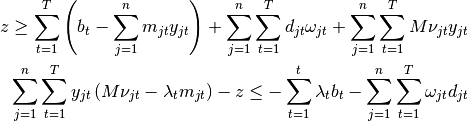
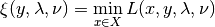
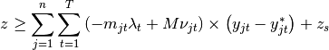
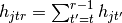
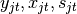
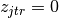
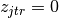
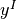
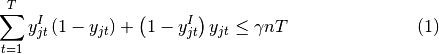

clspBenders module¶
| Filename: | clspBenders.py |
|---|---|
| Author: | marco caserta |
| Date: | 09.03.2017 |
| Last Update: | 01.06.17 |
Copyright (C) 2017 by Marco Caserta (marco dot caserta at ie dot edu)
(This document was generated on 01.06.17 at 12:54.)
This program is free software; you can redistribute it and/or modify it under the terms of the GNU General Public License as published by the Free Software Foundation; either version 2 of the License, or (at your option) any later version.
This program is distributed in the hope that it will be useful, but WITHOUT ANY WARRANTY; without even the implied warranty of MERCHANTABILITY or FITNESS FOR A PARTICULAR PURPOSE. See the GNU General Public License for more details.
You should have received a copy of the GNU General Public License along with this program; if not, write to the Free Software Foundation, Inc., 59 Temple Place - Suite 330, Boston, MA 02111-1307, USA.
Introduction¶
NOTE: A completely modified version of this code is presented below.
This code implements a simple benders decomposition scheme for the multi-item multi-period capacitated lot sizing problem. Benders cuts are added via LazyConstraintCallback(). The case of an infeasibility cut is not considered, since the subproblem is always feasible (due to the possibility to choose an arbitrarily large value for the initial inventory level.) This should be improved adding a cut based on extreme rays.
The following is a formulation for the MIMPLS:

To address the problem using Benders decomposition, we define a master, which
includes the difficult binary variables  , and a subproblem,
which deals with the continuous variables
, and a subproblem,
which deals with the continuous variables  .
.

 is the best possible cost obtained for a given
is the best possible cost obtained for a given
 .
.Subproblem¶
Given a solution to the master problem  , we define a primal
subproblem as:
, we define a primal
subproblem as:
Note that the subproblem is an LP and, therefore, can easily be solved using cplex. Once the subproblem is solved, we obtain the optimal dual values.
Assume we have:
 : The dual values of the capacity constraints (2)
: The dual values of the capacity constraints (2) : The dual values of the demand constraints (3)
: The dual values of the demand constraints (3) : The dual values of the logical constraints (4)
: The dual values of the logical constraints (4)
Then, we write the benders cut as follows:

Alternative Formulation Based on the Support Function¶
(Based on Floudas, Non-linear and Mixed-integer Programming, Ch.6)
The general master program is:

where constraints (2) are optimality cuts, while constraints (3) are
feasibility cuts. In this work, we ignore the feasility cuts, due to the use
of initial inventory variables sI. Now, since the above formulation
requires the definition of all the possible value of  and
and
 , we solve a relaxation of the master problem. Therefore, at
every iteration, the master provides a lower bound of the optimal value.
, we solve a relaxation of the master problem. Therefore, at
every iteration, the master provides a lower bound of the optimal value.
The master contains, as constraints, two inner optimization problems. We express the inner minimization problem in terms of support function, i.e

Using ideas from Geoffrion (1972), we consider the case of linearly separable
functions in  and
and  , i.e., the objective function
, i.e., the objective function
 and the constraints
and the constraints  can be separated. In this
case, the optimalit cut is:
can be separated. In this
case, the optimalit cut is:

where  is the optimal objective function value of the last
subproblem, and
is the optimal objective function value of the last
subproblem, and  indicates the current optimal solution of the
master problem.
indicates the current optimal solution of the
master problem.
Note
The dual values have positive sign here, since they are treated as Lagrangean multipliers (this is the reason why the sign is reversed.)
How to Run This Code¶
See parseCommandLine().
History¶
15.03.17:
The problem seems to be that the lower bound provided by the master is not tight. I attempted to tighten the bound, by adding constraints linking (somehow) the variables, but no improvement is observed. I tried a constraint that ensures that the number of
23.03.17:
Added user cuts, to get cuts for fractional values of y* as well.
Redefinition based on SPL¶
A modified version of this code is presented here. Basically, two important changes have been introduced:
1. We use the Simple Plant Location (SPL) reformulation for the Lot Sizing problem 2. Rather than relying on LazyConstraintCallback(), we now implement a cycle to define Benders’ scheme, with iterative calls to master and subproblems.
The following is the SPL reformulation:
![\begin{eqnarray}
& \min z = & \sum_{j=1}^n \sum_{t=1}^T f_{jt}y_{jt} +
\sum_{j=1}^n \sum_{r=1}^T \sum_{t=1}^{r-1} h_{jtr}z_{jtr}
\label{eq:SPL-obj}\\
&\mbox{s.t} & \sum_{j=1}^n \left(a_{jt}\sum_{r=t}^T z_{jtr} +
m_{jt}y_{jt}\right) \leq b_t,
\quad t = 1, \ldots, T \label{eq:SPL-capacity-constr} \\
&& \sum_{t=1}^r z_{jtr} = d_{jr},
\quad j = 1, \ldots, n , \quad r = 1, \dots, T \label{eq:SPL-demand-constr}
\\
&& z_{jtr} \leq d_{jr}y_{jt},
\quad j = 1, \ldots, n , \quad t = 1, \dots, T, \quad r=t,\dots,T
\label{eq:SPL-logic-constr} \\
&& \sum_{r=t}^T z_{jtr} \leq M y_{jt},
\quad j = 1, \ldots, n , \quad t = 1, \dots, T \\
&& y_{jt} \in \left\{0,1\right\}, \quad j = 1, \ldots, n, \quad
t=1, \ldots, T \label{eq:SPL-y-binary}\\
&& z_{jtr} \geq 0, \quad j = 1, \ldots, n, \quad
t=1, \ldots, T, \quad r = t,\dots,T \label{eq:SPL-z-cont}
\end{eqnarray}](_images/math/672f4ffb571fe465a670b5fb224be03d14c6e9d1.png)
where we define  as the cumulative cost of keeping in inventory a unit of item j from period t to period r-1.
The separation scheme and, consequently, the construction of master and subproblems is as before. However, the main change here concerns the use of a cycle to iteratively solve the master and the subproblems.
We call benderAlgorithm(), which is a function that implements the cycle.
Before doing that, we might apply some fixing schemes (both to zero and to one)
based on the LP relaxation. See functions MIP.solveLPOne() and
MIP.solveLPZero().
-
class
clspBenders.BendersLazyConsCallback(env)[source]¶ Bases:
cplex.callbacks.LazyConstraintCallbackThis is the LazyConstraintCallback of cplex. We implement Benders algorithm via callback. That it, the master is solved within a branch and bound framework and, every time a new master solution is obtained, the callback is used to:
- get the master solution
- pass it to the subproblem to obtain

- get the dual values and define Benders cut
- add the cut to the master
- give control back to cplex
- get the master solution
-
class
clspBenders.Instance(inputfile)[source]¶ Bases:
objectClass used to read the instance from a disk file. Instances are obtained from Trigeiro. We also compute a tight value for the big M constant, as well as a cumulative demand value for t to T.
-
class
clspBenders.MIP(inp)[source]¶ Bases:
objectDefine the full model and solve it using cplex. We use this class to compute optimal values of the full MIP models and compare them, along with the achieve performance, with the Benders approach.
This is the Standard Lot Sizing implementation, using variables . This formulation is no longer used in the current version of the code, since the SPL reformulation provides tighter relaxations.
-
solve(inp, nSol=99999, withPool=0, withPrinting=0, display=0, timeLimit=10000)[source]¶ Solve the original MIMPLS using cplex branch and bound. A number of flags can be activate, to control the behavior of the solver:
- nSol : maximum number of solutions to be visited
- withPool : collect a pool of solutions during the optimization phase
- withPrinting: control the output
- display : control cplex output
- timeLimit : set a maximum time limit
-
solveLPOne(inp)[source]¶ Same idea presented in
solveLPZero(). See comment above.
-
solveLPZero(inp)[source]¶ Solve LP relaxation of original MIP twice:
- the first time, we solve the LP relaxation of the whole problem, and we store the variables whose value is zero in the LP solution (indexLP1)
- the second time, we add a “corridor” type of constraint to the LP, enforcing that at least a given number of variables in indexLP1 will change value, i.e., will take a value above 0. We store in indexLP2 the variables that take value zero in the LP-constrained model.
- the intersection between indexLP1 and indexLP2 gives the set of variables we want to keep fixed to zero.
-
-
class
clspBenders.MIPReformulation(inp)[source]¶ Bases:
clspBenders.MIPThis class implements the SPL reformulation, which is the one currently used in the code. The reformulation has been presented in the introduction of this code and makes use of two sets of variables, i.e.:
- : setup variables
 : production variables, indicating the amount of production of item j produced in period t to satisfy the demand of period r. Obviously,  for all t>r.
: production variables, indicating the amount of production of item j produced in period t to satisfy the demand of period r. Obviously,  for all t>r.
-
class
clspBenders.WorkerLP(inp)[source]¶ Bases:
objectDefine and solve the subproblem. We initilize the subproblem with the right hand side values of the constraints to zero, since we assume the initial values of
to be equal to zero. Next, within the
WorkerLP.separate()function, we define the rhs values to the correct values, depending on the solution obtained from the master.Cplex requires the presolve reductions to be turned off, using:
cpx.parameters.preprocessing.reduce.set(0)
In addition, we need to ensure that the LP is not solved using the interior point method, otherwise dual values won’t be available. We can either use primal simplex or dual simplex.
Note
The subproblem constraints should be defined with a name, in order to be able to recall the precise name of each constraint when we want to obtain the dual values. Briefly, we need to:
define a unique name for each constraint, e.g.,
capacity.tfor each tstore such names in a vector of names, e.g,:
lCapacity = ["capacity." + str(t) for t in range(inp.nP)]
get the dual values using:
dCapacity = cpx.solution.get_dual_values(lCapacity)
-
separate(inp, ySol, zHat, y_ilo, z_ilo)[source]¶ This is the old implementation, based on the standard Lot Sizing formulation. Here is were Benders cut is obtained and passed to the master.
The following steps describe the algorithm:
- update rhs values of the subproblem, i.e., using the current optimal solution of the master problem
- solve the subproblem
- get the dual values

- generate cut (lhs and rhs) and store them in a constraint structure
- pass the cut to the master
- update rhs values of the subproblem, i.e., using the current optimal solution of the master problem
-
class
clspBenders.WorkerLPReformulation(inp)[source]¶ Bases:
object-
formulateDual(cpx, inp, ySol, w_ilo, l_ilo, v_ilo, e_ilo)[source]¶ Formulation of the subproblem dual. This is no longer used, but I leave it here for the sake of completeness. I checked that the formulation is correct, since the objective function value of the optimal dual is identical to that of the optimal primal.
-
paretoOptimal(inp, ySol, zDual, zHat)[source]¶ Get pareto optimal cuts. See paper for an explanation. In principle, this should be helpful, since the dual problem is degenerate and, consequently, multiple optimal solutions should exist. This means that the “right” selection of dual values should make a difference in the strength of the cut. However, the extra effort required to get pareto optimal cuts does not seem to be compensated by the minor improvement obtained here.
-
separate(inp, ySol, zHat, y_ilo, z_ilo_m)[source]¶ This is the separation scheme for the WorkerLPReformulation, i.e., the SPL reformulation. Here is were Benders cut is obtained and passed to the master.
The following steps describe the algorithm:
- update rhs values of the subproblem, i.e., using the current optimal solution of the master problem
- solve the subproblem
- get the dual values
- generate cut (lhs and rhs) and store them in a constraint structure
- pass the cut to the master
Advanced cplex functions are used here, e.g.:
farkas, pp = cpx.solution.advanced.dual_farkas()
to get Farkas certificates used to get the extreme rays, and:
dCapacity = cpx.solution.get_dual_values(lCapacity)
to get the dual values, which are used in the creation of optimality cuts.
- update rhs values of the subproblem, i.e., using the current optimal solution of the master problem
-
-
clspBenders.addCorridor(inp, cpx, ySol, y_ilo, cWidth)[source]¶ This function implements the corridor method for Benders’ decomposition. The idea can be described as follows: Every time a new incumbent solution is found by the subproblem (i.e., a feasible solution which improves the upper bound), a new best solution is obtained. Let us indicate with  such solution. After adding the corresponding optimality cut to the master, we also impose the following corridor constraint:

which ensure that no more than
 percent of the setup
variables will change value. This approach imposes a maximum hamming
distance with respect to the incumbent solution, thus
restricting the solution space of the master problem. This allows to speed up
the convergence of Benders’ algorithm.
percent of the setup
variables will change value. This approach imposes a maximum hamming
distance with respect to the incumbent solution, thus
restricting the solution space of the master problem. This allows to speed up
the convergence of Benders’ algorithm.
-
clspBenders.benderAlgorithm(inp, fixToZero, fixToOne, cPercent, cZero, cOne)[source]¶ This function implements Benders’ scheme without the use of callbacks. We thus define a cycle that iteratively solves the master and the subproblems, until a termination criterion is reached.
The current implementation is heuristic in nature, since fixing schemes as well as a corridor are used. Therefore, there is no guarantee that the solution returned by this algorithm is optimal. To get an exact approach, deactivate the fixing schemes (to zero and to one) and the corridor scheme.
We make use of an in-out cycle, in a fashion similar to what has been done by Fischetti for the uncapacitated facility location problem (see their MS paper.) Probably, this part could be improved, to make it faster. However, it seems important to reach a good lower bound quickly. If the in-out cycle is not used, the lower bound is much worse and the convergence is extremely slow.
Another feature of the Benders’ implementation is connected with the use of a pool of solutions. Before calling Benders’ algorithm, we heuristically solve the original CLSP with a maximum number of solutions to be reached. During this call to cplex, we collect a pool of solutions, which can be used to tighten the master. The idea is that we then pass these solutions to the separation scheme. Alternative approaches have been explored, e.g., producing feasible solutions using a Cross Entropy scheme and, then, apply the separation mechanism to each of these solutions. To get the pool of solution, it suffices to call
MIP.solve()with the flagwithPool=1.
-
clspBenders.createMaster(inp, cpx)[source]¶ Create benders master problem. In reality, this is a relaxation of the master, to which we progressively add cuts.
Note
The master problem provides a lower bound to the optimal solution.
Here we try different methods to tighen the lower bound.
-
clspBenders.main(argv)[source]¶ Entry point.
We first parse the command line, then reading the instance from a disk file.
The algorithm to be used is selected via command line using flag -a. See
parseCommandLine()for more details on flags and options for this code.With respect to the type of algorithms that can be used, we have:
- Benders Decomposition
- Lagrangean Relaxation
- Dantzig-Wolfe
- Cplex MIP solver
-
clspBenders.parseCommandLine(argv)[source]¶ Parse command line. Options are:
-h help usage help -i inputfile instance file name -u userCuts activate user cuts (fractional values) -c cpercent corridor width -z zeros soft fixing to zero -o ones soft fixing to one -a algorithm type of algorithm used: With respect to the type of algorithms that can be used, we have:
- Benders Decomposition
- Lagrangean Relaxation
- Dantzig-Wolfe
- Cplex MIP solver